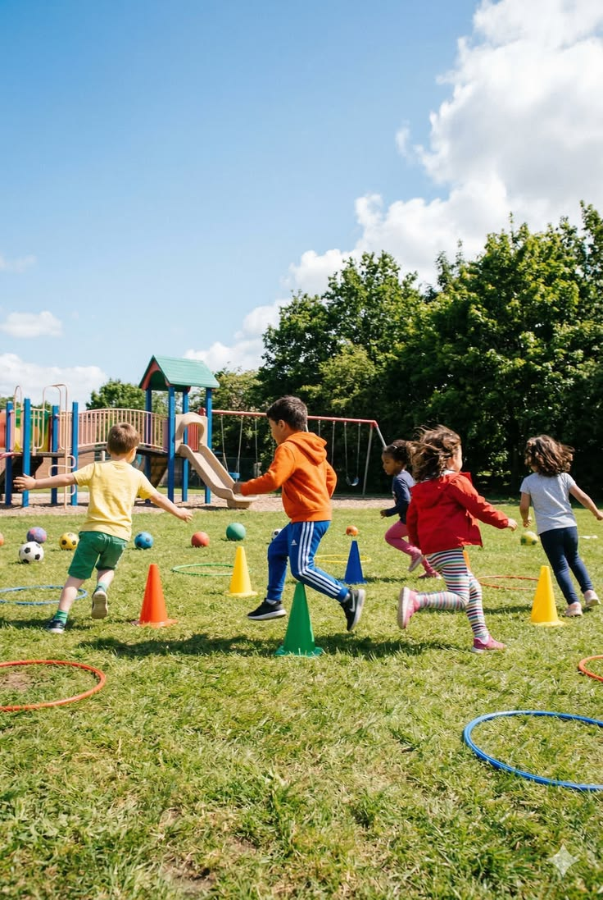

Los juegos dinámicos son actividades físicas grupales que implican correr, perseguir, esconderse y reaccionar rápidamente. A diferencia de los juegos de mesa, aquí el cuerpo está en movimiento constante.
En esta sección encontrarás cuatro de los juegos dinámicos más populares: Policías y Ladrones, Las Escondidas, Las Atrapadas y Congelados.
Se dividen los jugadores en dos equipos: policías y ladrones. Los ladrones tienen un tiempo para esconderse mientras los policías cuentan hasta 30. Luego, los policías salen a perseguir a los ladrones.
Los ladrones libres pueden rescatar a sus compañeros tocándolos en la cárcel. El juego termina cuando todos los ladrones están presos o cuando se acaba el tiempo acordado.
Un jugador es el "que se la queda" y debe contar hasta 20 o 30 con los ojos cerrados. Mientras cuenta, los demás se esconden. Al terminar, grita "¡Ya voy!" y sale a buscar a los escondidos.
Cuando encuentra a alguien, debe correr de vuelta a la "base" y gritar su nombre. Si el escondido llega antes a la base, se salva.
Un jugador es "el que trae" y debe perseguir a los demás para tocar a alguien. Cuando toca a un jugador, ese pasa a ser el nuevo "que trae".
Una variante muy popular es "la roña congelada" o "congelados": cuando alguien es tocado, se queda congelado hasta que un compañero lo descongele.
Es una variante de las atrapadas. Un jugador es "el que congela" y debe tocar a los demás. Cuando toca a alguien, ese jugador queda congelado en el lugar.
Los jugadores que aún están libres pueden descongelar a sus compañeros tocándolos. El juego termina cuando todos están congelados.
👥 Jugadores: De 4 a 20 participantes.
⏱️ Duración: Cada ronda 5-15 min. Sesión: 30-60 min.
🎯 Objetivo: Depende del juego: atrapar, esconderse o congelar.
🧰 Materiales: Ninguno especial. Solo espacio amplio.
• Lee el lenguaje corporal: Anticipa movimientos.
• Trabaja en equipo: La cooperación es clave.
• Aprovecha el terreno: Usa obstáculos y esquinas.
Haz clic en los círculos rojos antes de que desaparezcan. ¡Tienes 20 segundos!